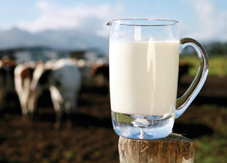

Family and customers of Mark Nolt, a Pennsylvania farmer, watched in horror last April as a squadron of police cars and state agents drove him away in handcuffs. Was his crime terrorism? Narcotics? No. Nolt was selling raw milk, yogurt, fresh kefir and cheeses directly from his farm without a permit.
Pennsylvania is one of a handful of states that allow farmers to sell raw milk directly to consumers if they obtain a state-issued permit.
Raw milk enthusiasts think that unpasteurized milk contains important microbes and enzymes that help protect against everything from allergies to eczema. A 2007 Swedish study of nearly 15,000 children across five European countries found those who drank unpasteurized milk were significantly less likely to suffer from asthma and hay fever.
Until recently, Pennsylvania was fairly tolerant of unregulated unpasteurized milk sales. But lately, even farms with permits have been subjected to vigorous testing and surprise inspections by the state’s department of agriculture. Authorities maintain that raw milk consumption can lead to food-borne illness.
In Georgia, raw milk is required to carry a label that reads “not for human consumption.” Cow-share programs, in which consumers buy a share in a cow for a portion of its milk, were recently shut down in Ohio and Michigan. California has tried to impose strict limits on the amount of bacteria raw milk can contain - a tactic decried by supporters because unpasteurized milk naturally contains a variety of bacteria.
Despite the efforts to stem the interest in raw milk, the number of dairies across the country offering the milk is growing exponentially. In Pennsylvania, raw milk permits have more than doubled since 2005, fueled by renewed consumer interest in locally produced wholesome foods. It’s attractive to farmers because those who send their milk to big dairy conglomerates struggle to get $1 to $1.50 per gallon, while those who sell raw milk to consumers are getting from $5 to $8.50 per gallon.
Nolt says what he’s doing is strictly a private matter between producers and willing consumers. Furthermore, many contend that such transactions are rights that are guaranteed by the U.S. Constitution as well as Pennsylvania’s original Food Act of 1935. Nevertheless, Pennsylvania fined him more than $4,000, and confiscated more than $50,000 in equipment and fresh dairy products. Nolt plans to appeal his case.
|
 ISTOCKPHOTO Is raw milk a superfood or major health risk? You may not get to decide. |
ISTOCKPHOTO Farmer Mark Nolt was arrested and fined for selling raw milk products without a permit. |
|